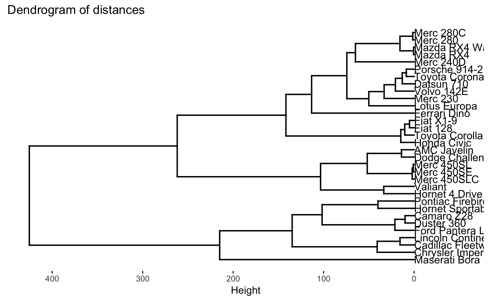
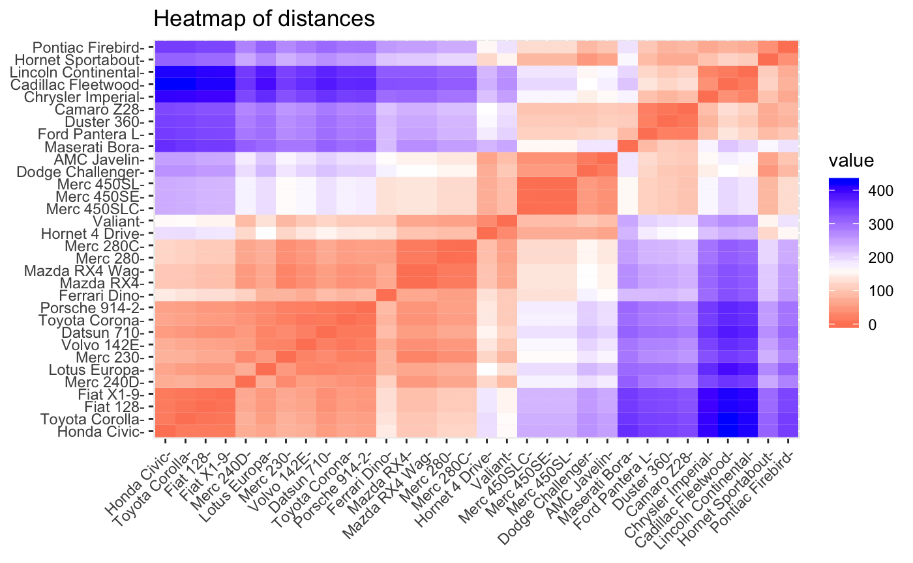

vignettes/vignette_disto.Rmd
vignette_disto.Rmddisto is a R package that provides a high level API to interface over backends storing distance, dissimilarity, similarity matrices with matrix style extraction, replacement and other utilities. Currently, in-memory dist object backend is supported.
R provides “dist” class for storing distance objects. Under the hood, it is a numeric vector storing lower triangular matrix (diagonal excluded) in column order along with a few attributes. There are methods to subset ([[), print and coerce them from and to matrices using as.dist and as.matrix respectively.
In general,
d[1:5, ] would not work.d[1, 2] <- 3
disto was conceived to address these issues while keeping dist object as the back-end with the philosophy of minimal copies. This evolved into high-level API for dealing with generic distance objects irrespective of whether the object is in memory, disk or a database. Currently, the bindings are provided for in-memory objects of class ‘dist’.
library("disto")
# create a dist object
do <- dist(mtcars)
# create a disto connection (does not nake a copy of do)
dio <- disto(objectname = "do")
# what's dio
dio
#> disto with backend: dist
#> size: 32
# what does it actually contain
unclass(dio)
#> $name
#> [1] "do"
#>
#> $env
#> <environment: R_GlobalEnv>
#>
#> $backend
#> [1] "dist"
# summary of the distance object underneath
summary(dio)
#> disto with backend: dist
#> size: 32
#>
#>
#> statistic value
#> ---------- ------------
#> minimum 0.6153251
#> q1 75.8060917
#> median 156.7219138
#> mean 169.2879670
#> q3 248.7116121
#> maximum 425.3446517
# what is the size?
size(dio)
#> [1] 32
# what are the names?
names(dio)
#> [1] "Mazda RX4" "Mazda RX4 Wag" "Datsun 710"
#> [4] "Hornet 4 Drive" "Hornet Sportabout" "Valiant"
#> [7] "Duster 360" "Merc 240D" "Merc 230"
#> [10] "Merc 280" "Merc 280C" "Merc 450SE"
#> [13] "Merc 450SL" "Merc 450SLC" "Cadillac Fleetwood"
#> [16] "Lincoln Continental" "Chrysler Imperial" "Fiat 128"
#> [19] "Honda Civic" "Toyota Corolla" "Toyota Corona"
#> [22] "Dodge Challenger" "AMC Javelin" "Camaro Z28"
#> [25] "Pontiac Firebird" "Fiat X1-9" "Porsche 914-2"
#> [28] "Lotus Europa" "Ford Pantera L" "Ferrari Dino"
#> [31] "Maserati Bora" "Volvo 142E"
# convert to a dataframe
# caveat: costly for large distance matrices
head(as.data.frame(dio))
#> # A tibble: 6 x 3
#> item1 item2 distance
#> <fct> <fct> <dbl>
#> 1 Mazda RX4 Wag Mazda RX4 0.615
#> 2 Datsun 710 Mazda RX4 54.9
#> 3 Hornet 4 Drive Mazda RX4 98.1
#> 4 Hornet Sportabout Mazda RX4 210.
#> 5 Valiant Mazda RX4 65.5
#> 6 Duster 360 Mazda RX4 241.
# quick plots
plot(dio, type = "dendrogram")
plot(dio, type = "heatmap")
The idea is to provide an interface so that user does not worry about the storage and interacts with a matrix-like distance object without coercing as a matrix. Matrix coercion can be costly memory-wise when the dist object is large.
# what is the distance between 1st and 2nd element
# note that this returns a matrix
dio[1, 2]
#> Mazda RX4 Wag
#> Mazda RX4 0.6153251
# this should be same as above, except the matrix is transposed
dio[2, 1]
#> Mazda RX4
#> Mazda RX4 Wag 0.6153251
# extract using names/labels
dio["Mazda RX4 Wag", "Mazda RX4"]
#> Mazda RX4
#> Mazda RX4 Wag 0.6153251
# for a single value extraction, `[[` is efficient as it does less work
dio[[3, 4]]
#> [1] 150.9935
# dio[["Mazda RX4 Wag", "Mazda RX4"]] wont work, only integer index is supported in `[[`
# neither would dio[[c(1, 2), 3]]
# extract
dio[1:5, 9:12]
#> Merc 230 Merc 280 Merc 280C Merc 450SE
#> Mazda RX4 25.46831 15.36419 15.67247 135.43070
#> Mazda RX4 Wag 25.32845 15.29569 15.58377 135.42548
#> Datsun 710 33.18038 66.93635 67.02614 189.19549
#> Hornet 4 Drive 118.24331 91.42240 91.46129 72.49643
#> Hornet Sportabout 233.49240 199.33450 199.34066 84.38885
# extract mixed
dio[1:5, c("Merc 240D", "Merc 230")]
#> Merc 240D Merc 230
#> Mazda RX4 50.15327 25.46831
#> Mazda RX4 Wag 50.11461 25.32845
#> Datsun 710 49.65848 33.18038
#> Hornet 4 Drive 121.27397 118.24331
#> Hornet Sportabout 241.50697 233.49240
# exclude i or j
dim(dio[1:2, ])
#> [1] 2 32
dim(dio[, 1:2])
#> [1] 32 2
dim(dio[,])
#> [1] 32 32
# All examples worked in outer product way
# Specify product type as inner to extract diagonals only
dio[1:5, 9:12, product = "inner"]
#> Warning in mapply(FUN = function (i, j, size) : longer argument not a
#> multiple of length of shorter
#> [1] 25.46831 15.29569 67.02614 72.49643 233.49240
# use lower triangular indexing
dio[k = 1] # same as dio[1, 2]
#> [1] 0.6153251
dio[k = 1:5]
#> [1] 0.6153251 54.9086059 98.1125212 210.3374396 65.4717710The flow of as.matrix(do) %>% apply(1, somefunction) is convenient. dapply provides ‘lapply’ like functionality without coercion to a matrix. This slower than the above flow but consumes much less memory. dapply is parallelized on UNIX-based systems.
# lets find indexes of five nearest neighbors for each observation/item
# function to pick unsorted indexes of 5 nearest neighbors (excepting itself)
udf_nn <- function(distances, index){
nnPlusOne <- which(data.table::frankv(distances, ties.method = "dense") <= 6)
setdiff(nnPlusOne, index)
}
hi <- dapply(dio, 1, udf_nn)
head(hi)
#> [[1]]
#> [1] 2 9 10 11 32
#>
#> [[2]]
#> [1] 1 3 9 10 11
#>
#> [[3]]
#> [1] 2 4 21 27 32
#>
#> [[4]]
#> [1] 3 5 6 13 23
#>
#> [[5]]
#> [1] 4 6 22 23 25
#>
#> [[6]]
#> [1] 2 4 5 10 11Two nearest methods are implemented: k nearest neighbors and fixed radius nearest neighbors.
# k nearest neighbors
knn <- nn(dio, k = 3)
head(knn)
#> [[1]]
#> [[1]]$indexes
#> [1] 2 10
#>
#> [[1]]$distances
#> [1] 7.00000 15.36419
#>
#>
#> [[2]]
#> [[2]]$indexes
#> [1] 1 3
#>
#> [[2]]$distances
#> [1] 7 8
#>
#>
#> [[3]]
#> [[3]]$indexes
#> [1] 2 4
#>
#> [[3]]$distances
#> [1] 8 9
#>
#>
#> [[4]]
#> [[4]]$indexes
#> [1] 3 5
#>
#> [[4]]$distances
#> [1] 9 10
#>
#>
#> [[5]]
#> [[5]]$indexes
#> [1] 4 6
#>
#> [[5]]$distances
#> [1] 10 11
#>
#>
#> [[6]]
#> [[6]]$indexes
#> [1] 4 5
#>
#> [[6]]$distances
#> [1] 33.55087 11.00000
frnn <- nn(dio, r = 10)
head(frnn)
#> [[1]]
#> [[1]]$indexes
#> [1] 2
#>
#> [[1]]$distances
#> [1] 7
#>
#>
#> [[2]]
#> [[2]]$indexes
#> [1] 1 3
#>
#> [[2]]$distances
#> [1] 7 8
#>
#>
#> [[3]]
#> [[3]]$indexes
#> [1] 2 4
#>
#> [[3]]$distances
#> [1] 8 9
#>
#>
#> [[4]]
#> [[4]]$indexes
#> [1] 3 5
#>
#> [[4]]$distances
#> [1] 9 10
#>
#>
#> [[5]]
#> [[5]]$indexes
#> [1] 4
#>
#> [[5]]$distances
#> [1] 10
#>
#>
#> [[6]]
#> [[6]]$indexes
#> integer(0)
#>
#> [[6]]$distances
#> numeric(0)The workhorse functions for the dist class are dist_extract and dist_replace.
dist_extract(do, 1:5, 2:7)
#> Mazda RX4 Wag Datsun 710 Hornet 4 Drive
#> Mazda RX4 7.00000 54.90861 98.11252
#> Mazda RX4 Wag 0.00000 8.00000 98.09589
#> Datsun 710 8.00000 0.00000 9.00000
#> Hornet 4 Drive 98.09589 9.00000 0.00000
#> Hornet Sportabout 210.33585 265.08316 10.00000
#> Hornet Sportabout Valiant Duster 360
#> Mazda RX4 210.3374 65.47177 241.40765
#> Mazda RX4 Wag 210.3359 65.43922 241.40887
#> Datsun 710 265.0832 117.75470 294.47902
#> Hornet 4 Drive 10.0000 33.55087 169.42996
#> Hornet Sportabout 0.0000 11.00000 70.17673
do <- dist_replace(do, 1:3, 4:6, 101:103)
dist_extract(do, 1:3, 4:6, product = "inner")
#> [1] 101 102 103Author: Srikanth KS, sri.teach@gmail.com
URL: https://github.com/talegari/disto
BugReports: https://github.com/talegari/disto/issues
Email: sri.teach@gmail.com↩